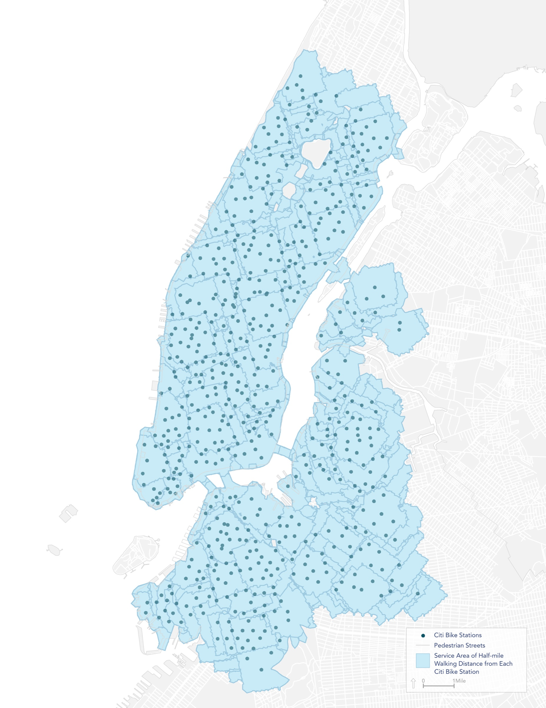
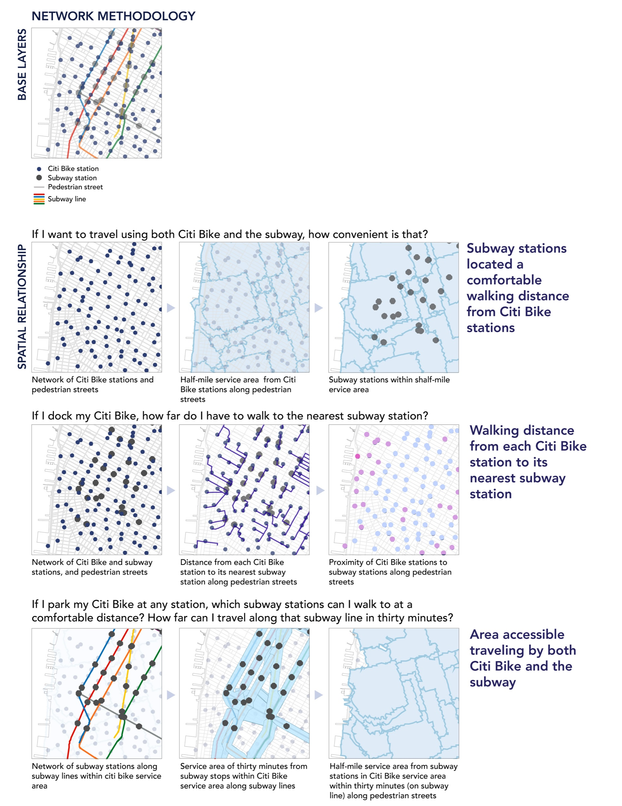
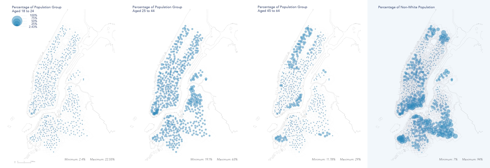

Earlier workColumbia GSAPP · 2017 · Mapping
Citi Bike access
Does Citi Bike repeat New York’s existing patterns of inequity, or break from them? This study measured who can reach the network on foot or by subway.

01Context
Citi Bike’s stations were heavily concentrated in one part of the city. The question wasn’t who rides, but who has access at all.
02Approach
Three service areas: a 10-minute walk to a station; a 10-minute walk from subway stations within 30 minutes of a Citi Bike station; and everywhere else, with no access. Census populations were split proportionally across them.

03Outcome
39%of subway stations are a 10-minute walk from a Citi Bike station
89%are within a 30-minute subway ride of one

Next project
Airbnb analysis

Say hello.
Working on something for the built environment? I’d love to hear about it.
© 2026 Shakira “Tola” OniyangiBack to top ↑